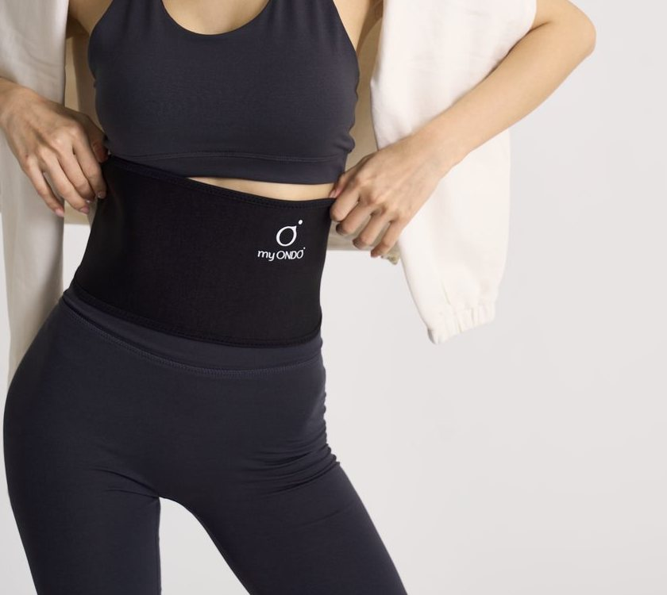

마이온도 구매 고객
택배 받자마자 둘러 봤는데…
밴드가 하나도 안 따뜻해요. 불량인가요?
마이온도
불량이 아니에요! 마이온도는 원래
밴드 자체가 뜨거워지지 않아요.
따뜻해지는 곳은 밴드가 아니라
고객님 몸속이거든요.

핫팩·전기 찜질기는 제품 자체가 뜨거워져 피부에 열을 대는 방식이에요. 마이온도는 체온을 받아 원적외선으로 되돌려 보내기 때문에, 밴드는 뜨거워지지 않아요.
피부 겉면에 머무르지 않고 피부 속 심부층까지 전해져, 체온 자체를 끌어올리는 방식입니다.
밴드를 만져 보는 대신, 1시간쯤 지나 배와 몸이 어떤지 느껴 보세요. 처음엔 아무 느낌이 없을 수 있고, 시점은 사람마다 달라요.
밴드가 미지근한 건 정상이에요.
뜨거운 건 제품이 아니라, 내 몸이니까요.
* 심부 전달은 브랜드 안내 기준이며, 체감 시점과 정도는 사람마다 다릅니다. 몸속 표시는 이해를 돕기 위한 연출입니다.